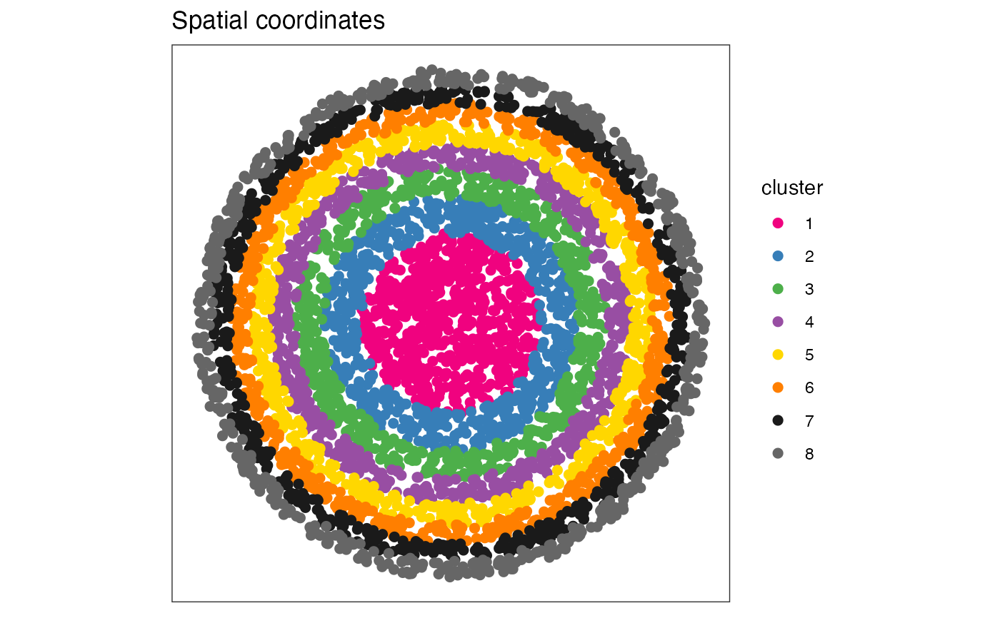

Simulate an unrealistic spatial omics dataset.
simulateDataset(n_cells = 300, n_genes = 30, n_rings = 3, rate = 10)An integer scalar specifying the approximate number of cells.
An integer scalar specifying the number of genes.
An integer scalar specifying the number of spatial rings.
A numeric scalar specifying the Poisson rate parameter for simulating counts.
A SpatialExperiment object.
This function generates an unrealistic spatial omics dataset based on a
user-specified number of cells and genes. The number of clusters is defined
by n_rings, while counts follow a Poisson distribution with a
user-specified rate rate. The simulation is set up such that the
number of cells in each cluster is uniformly distributed; as such, the final
number of cells is approximately equal to the user-specified number of cells.
set.seed(2023)
rings <- simulateDataset(n_cells = 5e3, n_genes = 50, n_rings = 8)
rings
#> class: SpatialExperiment
#> dim: 50 5024
#> metadata(0):
#> assays(1): counts
#> rownames(50): gene_1 gene_2 ... gene_49 gene_50
#> rowData names(0):
#> colnames(5024): cell_1 cell_2 ... cell_5023 cell_5024
#> colData names(3): cluster in_tissue sample_id
#> reducedDimNames(0):
#> mainExpName: NULL
#> altExpNames(0):
#> spatialCoords names(2) : x y
#> imgData names(0):
table(rings$cluster)
#>
#> 1 2 3 4 5 6 7 8
#> 636 634 610 650 646 645 616 587
ggspavis::plotSpots(rings, annotate = "cluster", size = 2)
#> Registered S3 method overwritten by 'ggside':
#> method from
#> +.gg ggplot2
